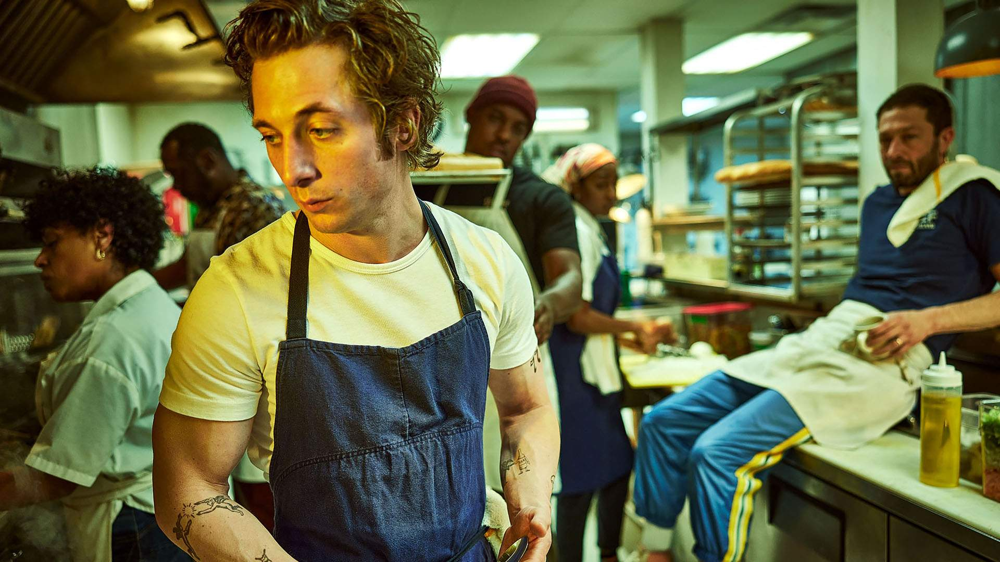
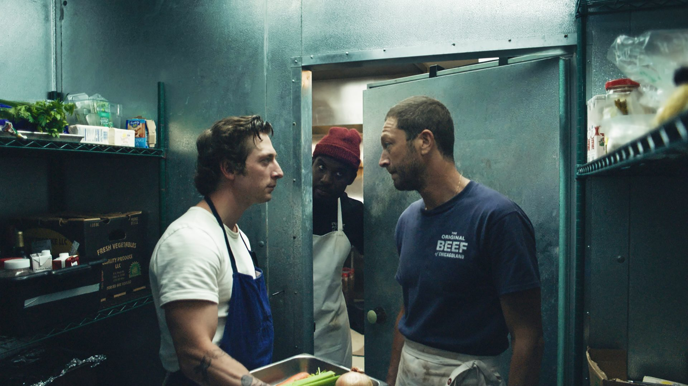
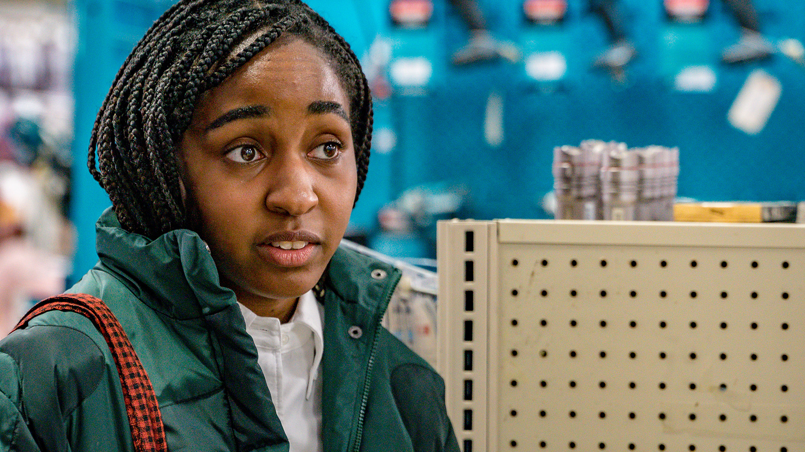
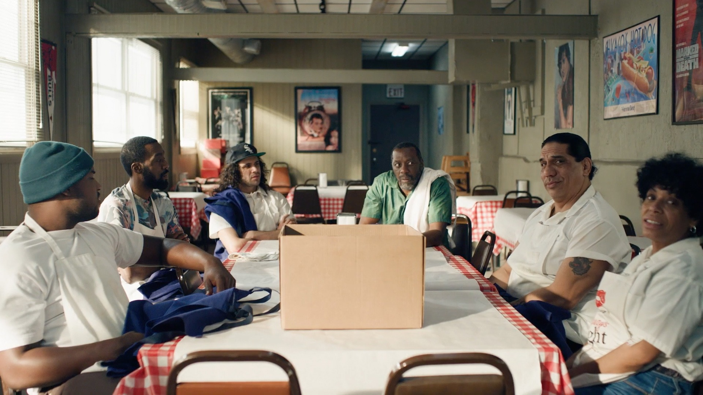
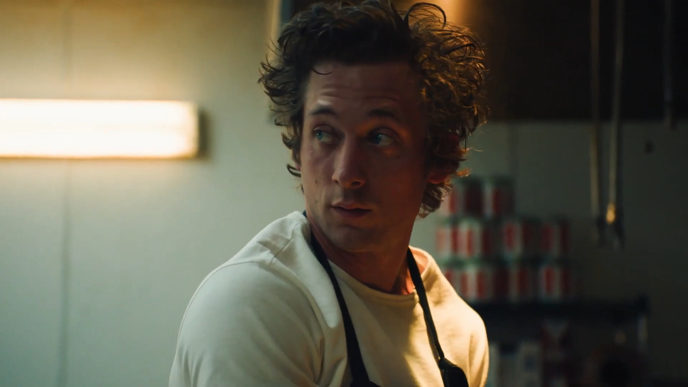
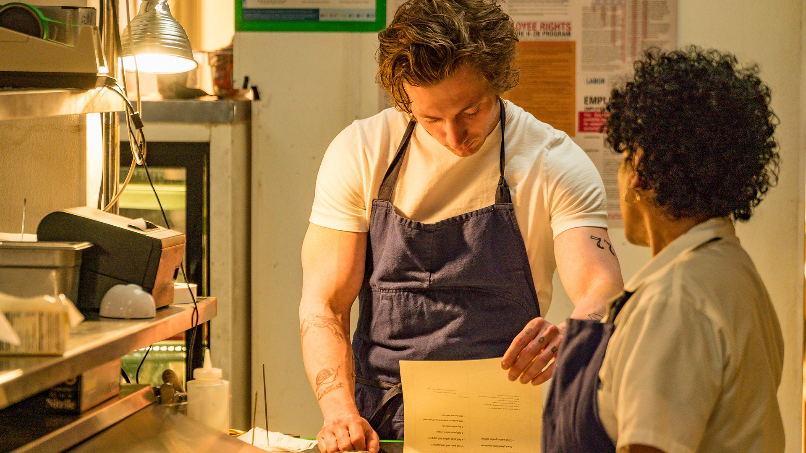
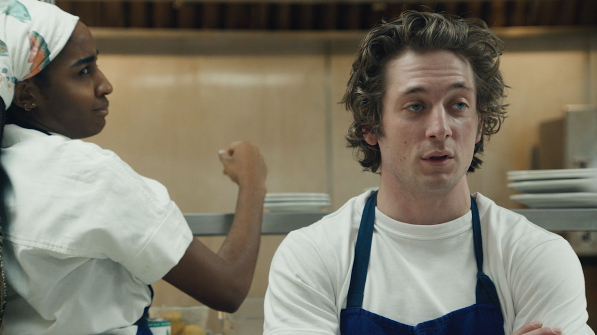

سریال خرس (The Bear) در ژانر کمدی درام، به کارگردانی کریستوفر استورر و جوانا کالو و با بازی جرمی آلن وایت، یکی از بهترین سریالهای امسال است. با زومجی و نقد این سریال همراه باشید.
سریالهایی هستند که از ماهها قبل (یا حتی سالها قبل)، با تبلیغات و هیاهوهای بسیار زیادی اعلام وجود میکنند. سریالهای بهشدت مورد انتظاری که بهلطف کمپینهای بازاریابی و تبلیغاتی گستردهشان، از قبل از عرضه شدنشان، کم و بیش موفقیت خود را تضمین کردهاند. هرچند دراینمیان سریالهایی هم هستند که با وجود هیاهوها و انتظارات بالا، درنهایت با استقبال منفی منتقدان و مخاطبان روبهرو میشوند و در نمایش خود شکست میخورند. اما بازهم این سریالها حداقل این امکان را دارند که در صورت برخورداری از یک داستان پرکشش و جذاب خیلی زود نام خود را بر سر زبانها بیندازند. اما دراینمیان سریالهایی هم هستند که نه کمپینهای تبلیغاتی آنچنانیای حولشان شکل میگیرد، نه دنباله یا براساس اثر شناخته شده و محبوبی هستند و نه پر از ستارههای مشهورند. سریالهایی که قبل از اولین نمایش خود، شاید کسی از آنها چیزی نداند. این سریالها کار سختی در پیش دارند و باید تنها با اتکا به جذابیتهای خود راهشان را پیدا کنند. سریال بِیر یا خرس (عنوان سریال مخفف نام خانوادگی شخصیت اصلی آن کارمن بِرزاتو است که خرس هم معنی میشود)، یکی از این دست سریالها است. سریالی محصول شبکه FX on Hulu که توانست توجه مخاطبان و منتقدان را به جهان کوچک هیجانانگیز و دوستداشتنی خود جلب کند.
این یک سریال کمدی درام درباره جریان عادی زندگی روزمره و کاوشی در آشفتگیها و سختیهای طافتفرسای آن و تقلا برای کنترل و در دست گرفتن آن است. زمانیکه در یک لحظه، افسار زندگی روزمره از دستمان در میرود و همه چیز جای خودش را به یک آشفتگی محض میدهد چه میکنیم؟ زمانیکه در حال جان کندن هستیم تا سرانجام آرامش به جریان زندگیمان بازگردد اما بدبیاریها و اتفاقات بد دست از سرمان برنمیدارد و ناگهان با یک تصمیم احساسی غلط همه چیز به حد انفجار میرسد. البته این سریالی نیست که فقط با ناملایمتیها و آشفتگیهای اعصاب خوردکن و خستگیها و استیصال ناشی از زندگی روزمره سروکله بزند، بلکه آرامش و امید و صمیمیتی انسانی را در داخل لحظات پرآشوب خود جستوجو میکند. سریالی درباره غذاها، کبابها، ساندویچ، دسرها و دوناتها، پیشبندهای مچاله شده، چهرههای عصبی، نگاههای خسته و غضبناک، بوی عرق و لحظات همدلی و همراهی و درنهایت احساس رضایت از تجربه یک طعم دلچسب. سریال The Bear در مدت زمان نسبتا کوتاه هشت قسمته خود با یک حاشیه صوتی شنیدنی و متنوع و پویایی توقفناپذیرش، عطر و طعمی دلانگیز دارد.
دراینمیان عنصر اساسیای که در شکلگیری جهان ویژه The Bear نقشه داشته، فیلمنامه دقیق، ریزبافت و متقاعدکننده آن است. فیلمنامه بِر چندان تابع الگوهای آشنای قصهگویی نیست. بهعنوان نمونه، در اینجا مفاهیمی مانند قوس شخصیتها و سیر تکاملی آنها، به شکل کلاسیک خود بسط پیدا نمیکنند. البته که شخصیتها در اینجا تکامل مییابند و تغییر میکنند اما همه آنها درست مانند زندگی واقعی رخ میدهند. آنها تصمیمات عجوله میگیرند، از کوره در میروند، اشتباه میکنند، رنج میکشند و تغییر میکنند. در یک کلام میتوان گفت که آنها زندگی میکنند. بنابراین در اینجا نباید گرههای داستانی آنچنانی و نقاط تحول شخصیتی مشخص و روشنی را انتظار داشته باشید. چراکه داستان بِر، بر موقعیتهای ساده روزمره که گاهی بهراحتی بغرنج و پیچیده میشوند، بنا شده است. همچنین The Bear یکی از آن دسته از سریالهایی است که تمرکز آنها بر محیط کار است. سریالهایی که بهعنوان سریالهای محیط کار شناخته میشوند. درواقع بِر درکنار سریالهایی مانند کمدی محبوب اداره یا کمدی فوتبالی تد لاسو قرار میگیرد. کریستوفر استورر در بِر ما را به درون دنیای آشفته و هر لحظه رو به ویرانی یک رستوران کوچک نابسامان به نام The Beef در شیکاگو میبرد که در آن ساندویچهای گوشت و برخی غذاهای ایتالیایی-آمریکایی طبخ میشود. ما در بخش زیادی از زمان سریال در فضای پرهرج و مرج آشپزخانه این رستوران هستیم. The Bear، کاوشی در چگونگی ادغام زندگی خصوصی و کاری، روابط انسانی و تاثیرگذاری آدمها بر یکدیگر در یک محیط کاری پرآشوب است. فیلمنامه استورر به مخاطب اجازه میدهد که پابهپای شخصیتها، اضطرابها و فشارهای طافتفرسای محیط کاری یک رستوران و همچنین آرامش ناشی از رسیدن به خوشیهای کوچک را لمس کند.
(در ادامه به بخشهایی از داستان سریال اشاره میشود)
همراه اصلی ما در این سریال، یک سرآشپز جوان و زبده به نام کارمن برزاتو (یا کارمی، در بِر شخصیتها اکثرا اسامی همدیگر را به اختصار بیان میکنند) است که در تعدادی از مهمترین رستورانهای جهان کار کرده و جوایز زیادی را بهعنوان یک سرآشپز دریافت کرده است. اما او بهخاطر یک اتفاق تراژیک، خودکشی برادر بزرگترش مایکل، مجبور میشود به شیکاگو بازگردد تا رستوران خانوادگی کوچکشان که مایکل در وصیتش به او سپرده است را اداره کند. ما در شروع سریال کارمی را در مرکز یک آشوب غیرقابل کنترل و تا گردن در دردسر میبینیم. چراکه مایکل یک کسبوکار پر از بدهی را برای او باقی گذاشته است. از سوی دیگر کارمندان قدیمی آنجا که همگی با مایکل رابطهای نزدیک داشتهاند به نظر میرسد حوصله و انرژی زیادی برای سامان دادن به آنجا ندارند. از سوی دیگر دوست قدیمی مایکل و کارمی، ریچارد یا ریچی با بازی ابن ماس-بچراک که درکنار مایکل مدیریت آنجا را به عهده داشته است، میانه خوبی با کارمی ندارد. ریچی که گویی از فقدان دوست قدیمیاش و زندگی آشفته خانوادگی خود رنج میبرد، شخصیتی بیکله و بیاعصاب یا به قول خود دردسرساز است. کسی که گویی بیشتر از آنکه قصد سامان دادن آنجا را داشته باشد، قصد ویران کردنش را دارد.
به این ترتیب کارمی از رستورانهای پنج ستاره ناگهان خود را در مکانی فرسوده و آشفته میبیند که همه چیز در آن به حال خود رها شده است. از سوی دیگر کارمی که در چند سال گذشته با برادرش میانه خوبی نداشته است علاوهبر بدهیها باید با ارواح گذشتهای که آزارش میدهند مبارزه کند و همچنین با کارکنان خسته و بیانضباط آنجا سروکله بزند. شاید همان ابتدا این سؤال پیش بیاید که چرا کارمی باید از چنان شغلهای معتبری دست بکشد و فقط بهخاطر وصیتنامه برادرش به جایی بیاید که زمانی او را از آنجا بیرون کردهاند. خود کارمی در یک سکانس اعترافگونه پاسخ این سؤال را میدهد. جایی که او اعتراف میکند تقلای او برای راست و ریس کردن رستوران خانوادگیشان، برای ترمیم رابطهاش با برادر از دست رفتهاش و همچنین سامان دادن به خانوادهاش است. زیرا بهگفته خود او این رستوران برای خیلیها ارزشمند بوده و است. این همیشه رویای کارمی بوده است که در آنجا و درکنار برادرش کار کند. اکنون اگرچه برادرش در آنجا نیست اما حضورش را درکنار خود حس میکند. برادری که همیشه هوایش را داشته و او را به جلو رفتن سوق میداده است. شاید اصلا به همین خاطر مایکل زمانی مانع کار کردن برادرش در آنجا شده است. بنابراین حسی درونی و عمیق کارمی را به این مکان پیوند میزند، حتی اگر بدترین جای ممکن باشد که نیست. او میتوانست آنجا را بفروشد و به همان رستورانهای پرستاره بازگردد، اما ترجیح میدهد جایی بماند که احساس میکند به آن تعلق دارد. البته این مسئله بهنوعی درباره سایر کارکنان آنجا نیز صدق میکند. همه آنها، چه کارکنان قدیمی و چه سرآشپز جدید مانند سیدنی، با وجود تنشهایی که با کارمی و با یکدیگر دارند بهنوعی به آنجا احساس تعلق میکنند.
همچنین The Bear با واقعگرایی مثالزدنیای ما را دقیقا به دنیای پشت یک رستوران کوچک میبرد. استورر موفق میشود فضای یک آشپزخانه را با همه آشفتگیها، تنشها و استرسهایش به شکل ملموسی به تصویر بکشد. او و همکاران فیلمنامهنویسش در تصمیمی جسورانه هر شاخ و برگ داستانی اضافهای که میتوانست به این اتمسفر ویژه و واقعگرایانه لطمه بزند را کنار گذاشتهاند. ما حتی شخصیتها را بیشتر از آنکه در خلوتهایشان بشناسیم در خلال همین مراودات روزمره در محیط کار و تعاملهای دو نفره کوتاهشان است که میشناسیم.حتی برخی از این شخصیتها را به غیر از محیط آشپزخانه در جایی دیگر نمیبینیم. بهعنوان نمونه شخصیت مایکل که یک فرزند دارد و از همسرش جدا شده است را هیچ وقت درکنار فرزندش نمیبینیم. بلکه فقط ازطریق دو صحنه کوتاه و دیالوگهای او با دختر و همسر سابقش از آن مطلع میشویم اما با اینحال ازطریق مراودات روزانه معمولا تنشآمیز او و از درون سادهترین موقعیتها به درون رنجور و آسیبدیدهاش پی میبریم. در اینجا هیچ موقعیت داستانی آنچنانیای مانند یک رابطه عاشقانه یا یک نزاع انتقامجویانه را شاهد نیستیم. بلکه فقط با شور و اشتیاق کسانی همراه میشویم که تصمیم گرفتهاند بخشی از زندگی خود را به شغلی اختصاص بدهند که به آن اعتقاد دارند. مانند شخصیتی به نام مارکوس که با وسواس کمالگرایانهای بهدنبال این است که لذیذترین و جذابترین دوناتها را درست کند. شخصیتهایی که گاهی آنقدر در کار خود غرق شدهاند و گرفتار مشکلات روزمرهشان هستند که رد فرسودگی را در نگاهشان احساس میکنیم. شخصیتهایی که گویی همگیشان از افسردگی رنج میبرند و به انواع داروهای مسکن اعتیاد دارند. مانند مایکل که همه از او بهعنوان آدمی پرانرژی و پرشور یاد میکنند. بطوری که هیچکس فکرش را هم نمیکرده است که او روزی با شلیک گلولهای به زندگی خود پایان بدهد. جان برنتال که حضوری کوتاه در سریال دارد در یک فلاشبک مختصر مایکل را بهگونهای تجسم میکند که با اینکه در تمام طول سریال غایب است، احساس میکنیم که او را میشناسیم. شخصیتی که یادآوریاش یک تلنگر است: تلنگری به شخصیتهایی که زیر فشار کارهای روزانه خود گویی درهای احساسات درونیشان را بستهاند.
The Bear، به شکل هوشمندانه و ظریفی به این موضوعات میپردازد و جنبههای تاریکتر و پیچیدهتر دنیای کار را کشف میکند. از این منظر شاید بِر ما را به یاد فصل دوم تد لاسو بیندازد. همانطور که تد لاسو نیز در فصل دوم خود بهطور خاص به موضوع سلامت روان در فوتبال میپردازد، در اینجا هم کریستوفر استورر مشکلات و استرسهای یک محیط کاری پرفشار و پرتکاپو را بررسی میکند. بِر واقعیت محیط کاری یک آشپزخانه را همانطور که است نشانمان میدهد. کیفیت واقعگرایانه بِر در خلق فضا و اتمسفر محیط کاری و همچنین پرداخت شخصیتها، همان خصیصهای است که آن را برجسته میکند. «خودم رو زخمی کردم، سیر و پیز و فلفل و فلفل رفت لای ناخنها و در چشمهام. پوستم همزمان خشک شده بود و روغنی بود. انگشتهام از چاقوها پینه بسته و معدهم نابود شده بود». اینها بخشی از توصیفاتی هستند که کارمی از سالهای کار کردنش در رستورانهای مختلف ارائه میدهد. The Bear درکنار همه لحظات دوستداشتنی خود چنین اتمسفر بیرحمانه و طاقتفرسایی هم دارد. بهعنوان مثال در جایی از سریال سفارش پیشفروش به اشتباه باز میماند و ناگهان شخصیتها با حجم بسیار زیادی از سفارشها روبهرو میشوند که در مدت بسیار کوتاهی باید به آنها رسیدگی کنند. حاصل چنین اشتباهی یکی از بهترین قسمتهای سریال است که در یک پلانسکانس حدودا بیست دقیقهای دیوانهوار رخ میدهد. فضای کلاستروفوبیک سریال، احساس خفقان و تنگی نفسی را به تصویر میکشد که حاصل محیط کار و احساسات سرکوبشده است. مانند برادری که حضور ندارد اما روحش بر آنجا سایه افکنده است. در جزئیاتی که یادآور او است، در خاطرات، در ظرفهای غذا و در بدهیها. گویی همه چیز به او برمیگردد و مایکل باید با همه اینها مبارزه کند.
مشاهده شخصیتهایی که در این آشپزخانه دردسرآفرین کوچک دور هم میچرخند، به یکدیگر کنایه میزنند، با هم جروبحث میکنند، سر یکدیگر فریاد میکشند، همدیگر را تحسین میکنند، به ایدههای یکدیگر احترام میگذراند و سعی میکنند چالشهای جدید را بپذیرند، جذاب و دوستداشتنی است، هرچند در مواقعی هم آزاردهنده باشد. شخصیتهایی که درنهایت به یکدیگر کمک میکنند که بر موانع غلبه کنند و جلو بروند. آنها سعی میکنند خودشان را با سیستم جدید و ایدههای تازه تطبیق بدهند هرچند اگر در ابتدا با بدبینی به آن نگاه کنند. آنها تلاش میکنند که همه چیز را در یک چشمانداز وسیعتر و گشوده به آیندهای بزرگتر و روشنتر ببینند. آنها به معنای واقعی کلمه یک تیم یا خانواده دردسرساز و ناسازگارند که تلاش دارند به یک هارمونی سازنده برسند و این تعادل و هارمونی بهدست نمیآید مگر اینکه گاهی همه چیز و حتی خود را زیر سؤال ببرند. اینکه با دردها و رنجها و ترسهای خود روبهرو شوند و هر زمان برای چالشهای جدید و ایدههای تازه آماده باشند. و این همان چیزی است که به همه این جدلها و درگیریها، سوختنها و فریاد زدنها، گریه کردنها و خندیدنها، خوشیها و غمها، صمیمیتها و کدروتها، معنا میبخشد و مگر این چیزی غیر از زندگی است! در جایی از سریال کاراکتر ریچی، در جواب سؤال کارمن درباره اینکه به ترس از یک اتفاق خوب بهخاطر اینکه بعدش شاید اتفاق بدی رخ بدهد چه میگویند، به «زندگی» اشاره میکند. بله، The Bear سریالی است که با حساسیتی موشکافانه درباره انسانها صحبت میکند. درباره ما و آدمهایی که میتوانیم آنها را در اطراف خودمان ببینیم.